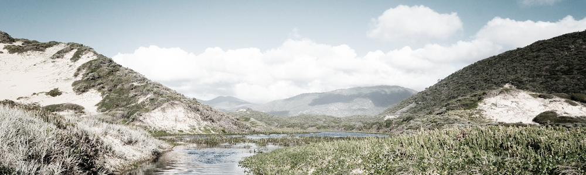

VIAJE A SUDAMERICA
Profundo en el corazón de América del Sur, descubrirás un lugar como ningún otro en el mundo. Los dinosaurios andan libres, y usted será capaz de caminar junto a Iguanodontes, Stegosauros, Allosauros, Megalosauros, y todo de los más grandes criaturas que habitan la tierra. No tenga miedo,sin embargo. Vas a tener un equipo de profesionales capacitados que guían a través del desierto traicionero.
En medio del vasto paisaje de América del Sur se encuentran varios de nuestros campings garantizados. Estos campamentos están perfectamente situados para la visualización de los dinosaurios que habitan la región. Utilizamos vehículos todoterreno como el transporte hacia y desde los sitios para acampar, así como viajar a pie a los campings más cercanos. Si usted nunca ha ido de caminata o acampado antes , ofrecemos clases de iniciación que le conseguirá preparados, además de la orientación obligatoria para todos los participantes.
Si quieres llegar a la sede central del campamento en el estilo, le ofrecemos un paquete de paracaidismo para aquellos que son lo suficientemente aventureros para llegar de esta manera. Te llevaremos desde el aeropuerto, en el avión de paracaidismo, donde llega a saltar en paracaídas y derecho a la tierra en el camping central. No se preocupe, si usted no está en saltar de un avión para llegar a su destino, lo llevaremos en vehículo hasta el camping central.